| Imagen | Gran premio | Cantidad de vueltas |
|---|---|---|
| 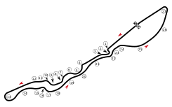 | GP DE ARABIA SAUDITA | 56 laps |
| 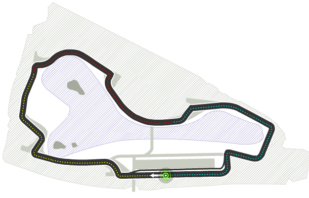 | GP DE AUSTRALIA | 58 laps |
| 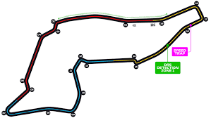 | GP DE EMILIA-ROMAÑA | 65 laps |
| 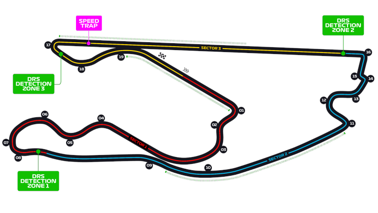 | GRAN PREMIO DE MIAMI | 62 laps |
| 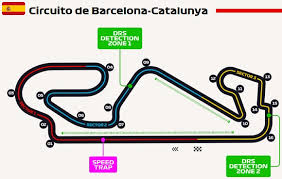 | GP DE ESPAÑA | 57 laps |
| 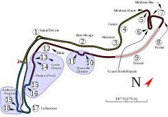 | GP DE MÓNACO | 54 laps |
| 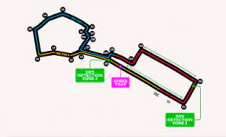 | GP DE AZERBAIYÁN | 61 laps |
| 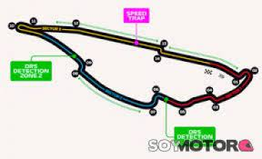 | GP DE CANADÁ | 52 laps |
 |
GP DE GRAN BRETAÑA | 58 laps |
| 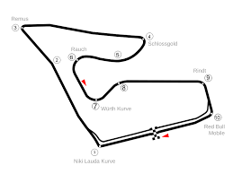 | GP DE AUSTRIA | 65 laps |
| 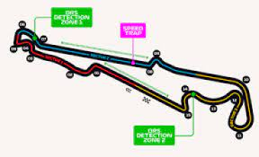 | GP DE FRANCIA | 62 laps |
| 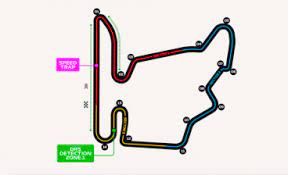 | GP DE HUNGRÍA | 57 laps |
| 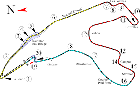 | GP DE BÉLGICA | 52 laps |
| 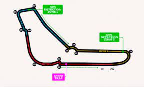 | GP DE ITALIA | 64 laps |
| 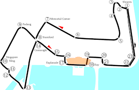 | GP DE SINGAPUR | 62 laps |
| 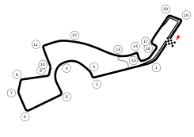 | GP DE RUSIA | 54 laps |